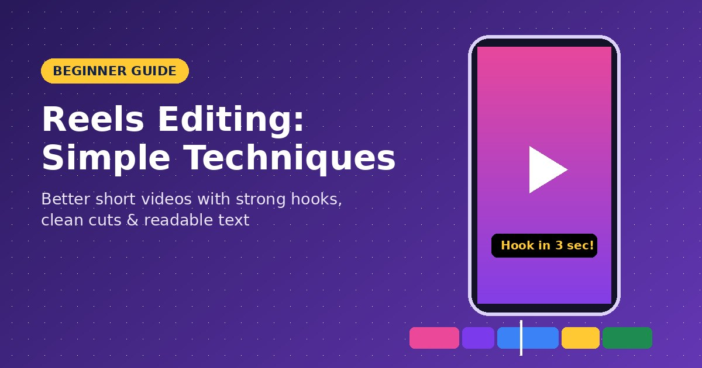
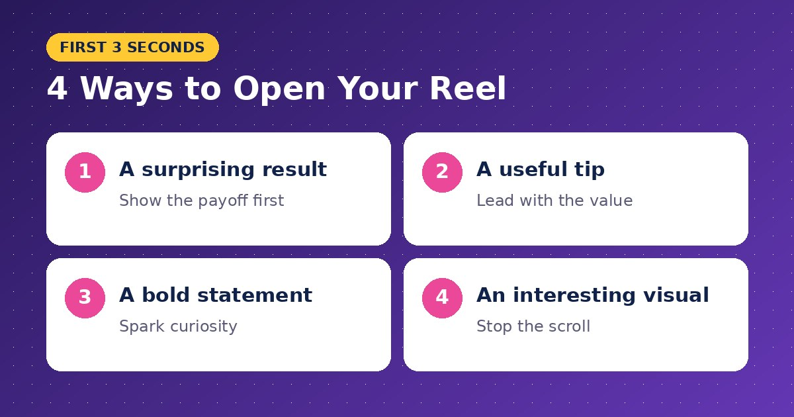
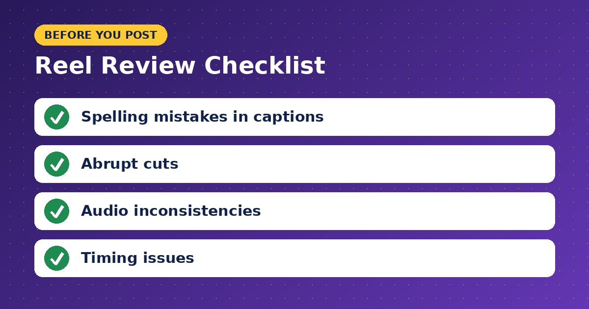

Beginner Guide to Reels Editing: Simple Techniques for Better Short Videos

Many people assume successful reels require expensive equipment and advanced editing skills. In reality, great reels often come from creators who understand a few basic editing principles and apply them consistently.
If you're new to content creation, this beginner guide to reels editing will help you produce cleaner, more engaging videos without feeling overwhelmed.
Start With a Clear Goal
Before opening any editing app, decide what your reel should accomplish.
Do you want to educate, entertain, inspire, or showcase a product? Having a clear purpose makes editing decisions much easier because every clip should support the main message.
Keep the Topic Narrow
One common beginner mistake is trying to cover multiple ideas in a single reel.
Short-form content performs best when it focuses on one specific lesson, tip, or story. Viewers are more likely to watch until the end when the content stays focused.
Organize Your Footage Before Editing
Editing becomes much faster when your clips are already sorted.
Delete blurry shots, duplicate recordings, and unnecessary footage before you begin. This reduces distractions and helps you focus on the strongest moments.
Choose Your Best Opening First
The first few seconds determine whether viewers continue watching.

Start with:
- A surprising result
- A useful tip
- A bold statement
- An interesting visual
Minimize introductory sections to ensure the main message appears quickly.
Make Cuts That Keep the Pace Moving
Most beginners leave too much empty space between clips.
Trim pauses, hesitations, and unnecessary transitions. Faster pacing often improves viewer retention because there's always something happening on screen.
Use Text to Support the Message
Many users watch reels without audio initially.
Adding concise on-screen text helps viewers understand the content even when the sound is muted. Keep captions short and easy to read.
For creators exploring editing techniques, transitions, and workflow improvements, resources such as https://alightpromodi.com can provide useful information and inspiration while learning the fundamentals of short-form video production.
Pay Attention to Audio
Good audio quality can significantly improve how professional a reel feels.
Whether you're using voiceovers, music, or live recordings, make sure audio levels remain balanced throughout the video.
Avoid Overusing Effects
New editors often add too many animations, filters, and transitions.
While effects can enhance a reel, excessive use can distract viewers from the actual content. Simplicity usually creates a cleaner viewing experience.
Review Before Publishing
Always watch your reel from beginning to end before posting.

Check for:
- Spelling mistakes in captions
- Abrupt cuts
- Audio inconsistencies
- Timing issues
Careful refinements, even on a small scale, can dramatically improve the outcome.
Many creators continue refining their editing skills by studying practical resources and experimenting with different techniques. Websites like https://www.alightpromodi.com can serve as a supplementary learning resource when testing new creative approaches and editing styles.
Common Reels Editing Mistakes
The most frequent mistakes include weak hooks, overcrowded visuals, inconsistent text placement, and unnecessary effects.
Another issue is editing without considering the viewer's experience. Every cut, caption, and visual element should help communicate the message more clearly.
Final Thoughts
This beginner guide to reels editing proves that effective editing isn't about complexity—it's about clarity. Focus on strong openings, smooth pacing, readable text, and purposeful cuts. As you practice these fundamentals consistently, creating engaging reels will become faster, easier, and far more enjoyable.